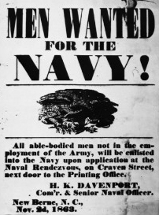
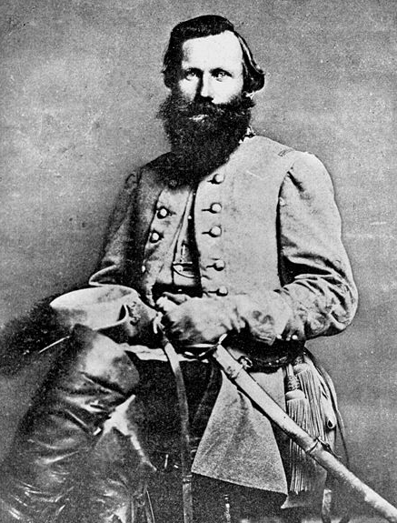
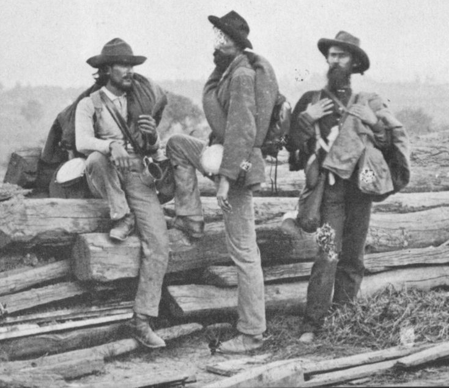

|
The Confederate Army consisted of a regular force, the Army
of the Confederate States of America, and a volunteer force
designated the Provisional Army of the Confederate States.
Created by the Confederate Provisional Congress March 6,
1861, the Confederate regulars imitated the United States
Army's organizational structure and its operational manual.
Regulations for the Army of the Confederate States were,
with two minor revisions, a copy of the U.S. Army
Regulation, 1857.
While very few enlisted men from the U.S. Army joined the
Confederate cause, as many as one fourth of the officers
took commissions in the Rebel regulars. These men exerted
significant influence over the operations of volunteer
military forces as senior general officers, engineer
officers, staff officers, and supply bureau officers. In
numbers, however, the Confederate regular army proved
insignificant. Authorized to enlist 15,000 men in eight
regiments of infantry, two regiments of cavalry, a corps of
artillery, a corps of engineers, and a company of sappers
and bombardiers, during the entire 1861-1865 period a mere
1,650 men served in the regulars. Of these, half were
officers.
Numerically, the volunteer force proved the most
significant element of the Confederate military. Created by
the Confederate Congress February 28, 1861, the Provisional
Army provided a temporary force to deal specifically with
the threat of Northern attempts to stop secession by force.
The enabling legislation granted the president the power to
accept into Confederate service any units in state service
for a period of 12 months. The legislation also allowed a
call for 100,000 volunteers and the enrolling of the various
state militias into Confederate service. In August 1861,
Congress authorized a second call for 400,000 volunteers to
serve enlistments ranging from 1 to 3 years. These troops
remained in the service of their respective states until
April 1862, when as part of the first Conscription Act, they
became a part of the Provisional Army. Throughout the war,
between 600,000 and 1,500,000 men served in the Provisional
Army.
Recruiting Soldiers
Recruiting the Confederate military forces took place at
various levels. The regular army created recruiting
stations at Baton Rouge Barracks, Louisiana; San Antonio
Barracks, Texas; Mount Vernon Arsenal, Alabama; Augusta
Arsenal, Georgia; Castle Pinckney, South Carolina; Fort
Johnston, North Carolina; and Bellona Arsenal, Virginia. At
these stations, enrolling officers attempted to obtain men.
|

Recruiting posters were common in the North,
but much less so in the South. In part, this was
because paper was in short supply, and in part it was because
the South lacked the sort of urban areas where such advertising
might be effective. As such, recruitment in the South tended
to be accomplished through personal contact and word of mouth.
|
However, the recruiting of regular army enlisted men failed
miserably and most of the stations suspended operations by
the end of 1861.
More successful during 1861 was the creation of various
volunteer military companies through the towns and country
of the Confederate states. Prominent citizens who called on
their neighbors to join in creating small military units
(e.g., an infantry company, an artillery battery, a company
of cavalry) often organized this local recruiting. These
units then consolidated into regiments with others form the
same state. During 1861, more volunteers presented
themselves than could by law be accepted into Confederate
service. The emotional response was so great that in many
cases hopeful soldiers in units not accepted for field
service grew furious at the thought of missing out on the
action. They despaired that they would not get a chance to
do any fighting since the war would end after the Yankees
got a taste of Southern fighting.
There were three primary branches in the Provisional
Army: infantry, cavalry, and artillery. The largest number
of men served in the infantry. Organized into regiments of
10 companies totaling 1,000 men, this branch of the service
constituted the main fighting force of the Confederate
military. Infantry training proceeded unevenly and depended
in many instances on the ability of the local unit
commanders to teach themselves (while simultaneously
teaching their men) the mysteries of tactics. The work
proved difficult and seemed unending to the volunteers. As
one Virginian put it, drill "was arduous labor, harder than
grubbing, stump-pulling, or cracking rocks on the turnpike."
While difficult, it was also necessary because the period's
infantry fighting tactics required a complex evolution of
movements made by men standing in line elbow to elbow in two
ranks. To help facilitate the training of the citizen
soldiers, the Confederate government assigned professional
soldiers, and, in some cases the cadets of the state
military schools, to instruct the recruits. Slowly, the men
learned the drills and the officers learned how to control
their units. In the two main Confederate armies serving in
northern Virginia and Tennessee, drill proficiency reached
high levels within a fairly short time. By early 1862, most
of the incompetent elected officers had been removed and
replaced by more skilled tacticians and administrators.
Artillery and Cavalry
In the secondary branches, artillery and cavalry, the
Confederates achieved mixed success in training and tactics.
In the artillery, the lack of experienced officers and
enlisted men created problems throughout the war. One Rebel
gunner remembered after the Civil War that "whole battalions
of artillery went into active service without a single man,
whether officer, non-commissioned officer, or private, who
knew anything about artillery." In a service where
technical knowledge played a major role, the lack of skilled
men resulted in a tactically inferior force.
In cavalry, the Confederates held an early advantage in
leadership and rank and file. Bold leaders, such as J.E.B.
Stuart, Nathan Bedford Forrest, John Singleton Mosby, and
|

Maj. Gen. J.E.B. Stuart was the Confederacy's most able
cavalry commander. His death in 1864 was a terrible blow to
Gen. Robert E. Lee and the Army of Northern Virginia.
|
John Hunt Morgan, used their mounted troops aggressively and
imaginatively. The skill of many southern horsemen
contributed to the success of the cavalry which, in general,
maintained its superiority to Union mounted troops until
1864 when declining supplies of horses limited rebel
mobility and the employment of rapid-fire shoulder arms gave
Federal cavalry troops firepower advantage.
While many volunteer units struggled to organize and
train, the presence of state militias and military schools
such as the Citadel in Charleston and the Virginia Military
Institute in Lexington, Virginia, improved the state of
military preparedness. Although in many cases little more
than glorified social clubs, some Southern militia units
such as the Washington Artillery of New Orleans, the
Oglethorpe Light Infantry of Savannah, the Kentucky State
Guard, and various state militias provided a small core of
trained soldiers. These pre-war institutions impacted most
strongly the army forming in Virginia. There, many of the
officers who led the Rebel forces had served in some of the
South's best militias. Throughout the war, their experience
provided the foundation of a well-led force. In other
regions, where the militia influence was less (such as the
army forming in Tennessee), the officer corps remained weak
and leadership less than ideal.
Problems of Supply
Supplying the vast number of volunteers created major
problems for the Confederate government. With no formal
military supply apparatus in place and with limited
production capabilities, the Confederate War Department
faced a seemingly impossible task.
Arming the volunteers presented the most pressing problem
for the secessionist War Department. At the War's outset,
Southern arsenals contained roughly 296,000 shoulder weapons
of all types. Many of them were old smoothbore muskets,
some still using the outdated flintlock ignition system. In
all, only about 24,000 modern rifles and rifle muskets were
available. Regiments were unable to take the field in many
instances because they had no weapons. By 1862, through a
combination of domestic production, battlefield captures,
and imports from Europe, the supply problem lessened.
Throughout the Confederacy, increasing numbers of Rebel
troops obtained long-range, efficient weapons, thus,
improving their combat effectiveness. Still, mixed supplies
of weapons within regiments and brigades led to problems in
the field and limited the overall efficiency of some units.
In the artillery service, weapons proved an even greater
problem. Unable to produce adequate numbers of cannons and
reliable ammunition, the Confederate artillery almost always
fought at a tactical disadvantage.
Clothing varied at the war's outset, from the fine
uniforms worn by the former militia companies and provided
by friends, to the mismatched civilian clothing worn by many
volunteers. However, problems appeared early as the clothes
worn by the troops began to wear out. The central
government responded by creating a system called
"commutation." In this system, soldiers either bought
clothes or were supplied by their home states at the expense
of the Richmond government. Slowly, the Quartermaster
Department established a series of depots throughout the
South where clothing was produced for issue to all troops in
Confederate service. This system worked with varying
degrees of success through 1862-1865.
Food and transportation also presented operational
challenges to the emerging armies. Shortages of grain and
meat, and the inability to transport these vital supplies,
were serious problems. So severe were the shortages that
the Confederate government resorted to the practice of
impressment to obtain sufficient supplies of flour and meat.
While this did little to ease the problem it underscored
the degree of shortage in the Southern armies. Inadequate
supplies of horses and vehicles to transport ammunition,
clothing, and food compounded all of the supply problems.
As the number of horses declined so did the ability of the
armies to or take offensive actions or even feed themselves.
Organization of the Army
Operationally, the volunteer force was divided into
several organizations known as armies. These forces were
generally arrayed to protect the Southern territory. During
1861, the government spread its military forces widely in an
attempt to protect as many points as possible. This
resulted in troops being scattered along the Gulf Coast, in
northern Virginia, and across the northern border of
Tennessee. The nature of the Federal invasion of the South
in some ways dictated the emerging shape of the two main
Rebel forces. In Virginia, the front of the Union advance
in July 1861, the forces assigned to protecting the
Shenandoah Valley consolidated with Southern troops at
Manassas. This army successfully defended Richmond in the
|

Prisoners from the Army of Northern Virginia. This army
was the Confederacy's most important fighting force; when it was finally defeated and compelled
to surrender in April 1865, the Civil War was effectively over, even though the
Confederacy still had several armies remaining in the field.
|
summer of 1862 and became famous as Robert E. Lee's Army of
Northern Virginia (so named shortly after Lee took command).
As the threat to the Confederate capitol increased, more
and more troops from the Atlantic coast and western Virginia
were funneled to Lee's army. By far the most successful of
the Confederate armies, the Army of Northern Virginia fought
at Manassas, the Seven Days Campaign, Sharpsburg,
Fredricksburg, Chancellorsville, Gettysburg, the Overland
Campaign of 1864, and Petersburg. Some of the most famous
secessionist generals including Joseph E. Johnston, Thomas
J. "Stonewall" Jackson, J.E.B. Stuart, James Longstreet, and
George Pickett served in the Army of Northern Virginia.
Indeed, by 1863, General Robert E. Lee and his army had come
to symbolize the heart and soul of the Confederate cause for
most of the Southern people.
The second major Confederate force coalesced in northern
Mississippi as Union forces advanced along the Tennessee
River and into the Confederate heartland. Several scattered
corps under Leonidas Polk and William J. Hardee held the
southern part Kentucky in 1861 and early 1862. These
Confederate troops retreated into northern Mississippi
following the fall of Fort Donelson in February 1862.
Directed by Albert Sidney Johnston, the forces concentrated
at Corinth, Mississippi in March 1862. Bolstered by
reinforcements under Braxton Bragg from the Gulf Coast. The
concentrated army struck back and met the invading force at
Shiloh in southwestern Tennessee.
Having lost the battle and their commander, Albert Sidney
Johnston, the army retreated to northern Mississippi where
they worked to perfect their organization under P.G.T.
Beauregard and later Bragg. First called the Army of the
Mississippi, and later the Army of Tennessee, this force
under Braxton Bragg proved much less successful than Lee's
army. Under Bragg the command failed to protect the
valuable food and supply producing regions of Tennessee and
Georgia. With Bragg as commander, the Army of Tennessee
fought at the battle of Perryville, Kentucky; Murfreesboro,
Tennessee; Chickamauga, Georgia; and Chattanooga, Tennessee.
Following the Rebel rout at Chattanooga in November 1863,
Bragg resigned from active command and was replaced by
Joseph E. Johnston. Johnston commanded the army in July
1864 but was fired for his inability to defend Atlanta.
John Bell Hood took command, lost Atlanta and destroyed the
Army of Tennessee's effective field capabilities by hurling
it against the Federal trenches at Franklin, Tennessee
November 30, 1864. The army essentially dissolved in the
face of fierce Federal attacks at Nashville December 16,
1864.
Other significant armies created by the Confederate
government included Earl Van Dorn's Army of the West that
was defeated at Elkhorn Tavern, Arkansas in March 1862; H.
H. Sibley's Army of New Mexico that attempted but failed to
take and hold Arizona and New Mexico for the Confederacy;
John C. Pemberton's Army of Vicksburg that, in July 1863
surrendered to U. S. Grant; and Kirby Smith's Army of the
Trans Mississippi that served in the Confederate territory
west of the Mississippi River.
Source: Joan Waugh, ed., Facts on File Encyclopedia of American
History: Civil War and Reconstruction, 1856 to 1869 (New York: Facts on
File, 2003), 71-73.
|